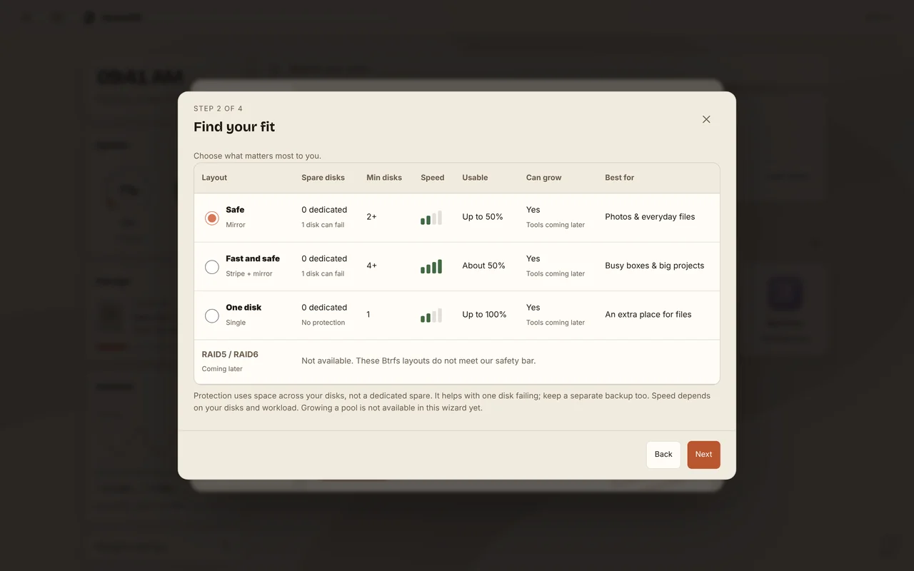
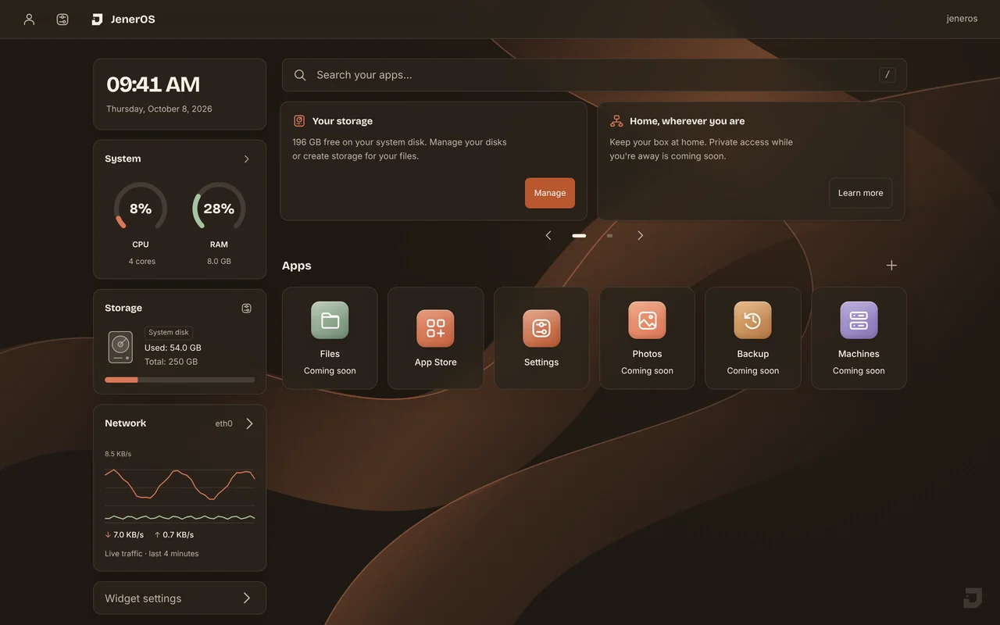

Your dashboard
Your whole box at a glance
The time, how busy your box is, how much space is left and your apps, all on one calm screen.


Setup
Set up from your phone
Your box shows a QR code. Scan it, type the 6-digit code and finish on your phone. No keyboard, no command line.

Safe updates
Updates that undo themselves
Your box keeps two copies of the system. If a new version can't start, it goes back by itself. You can also go back with one button.


Storage
Storage in a few taps
See every disk in your box. Pick Safe, Fast and safe or One disk, and each choice is explained in plain words before anything is erased.

App store
Your own app store
Photos, movies, files and your smart home, one tap each. The store is here today, and the apps arrive one by one.


Light or dark
Made for every screen
Warm dark or cream light, on a big monitor or the phone in your pocket. It always feels like home.